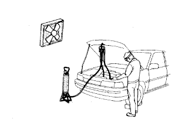
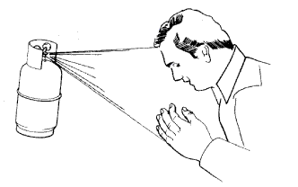
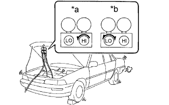

AIR CONDITIONING SYSTEM > PRECAUTION |
| 1.IF ANY OF FOLLOWING CONDITIONS ARE MET, KEEP ENGINE IDLING (ENGINE SPEED AT LESS THAN 2000 RPM) WITH AIR CONDITIONING SWITCH ON FOR AT LEAST 2 MINUTES |
| 2.DO NOT HANDLE REFRIGERANT IN AN ENCLOSED AREA OR NEAR AN OPEN FLAME |
|  |
| 3.ALWAYS WEAR EYE PROTECTION |
| 4.BE CAREFUL NOT TO GET LIQUID REFRIGERANT IN YOUR EYES OR ON YOUR SKIN |
|  |
Wash the area with lots of cold water.
Apply clean petroleum jelly to the skin.
Go immediately to a hospital or see a physician for professional treatment.
| 5.NEVER HEAT CONTAINER OR EXPOSE IT TO OPEN FLAME |
| 6.BE CAREFUL NOT TO DROP CONTAINER OR APPLY PHYSICAL SHOCKS TO IT |
| 7.DO NOT OPERATE COMPRESSOR WITH INSUFFICIENT REFRIGERANT IN REFRIGERANT SYSTEM |
| 8.DO NOT OPEN HIGH PRESSURE MANIFOLD VALVE WHILE COMPRESSOR IS OPERATING |
|  |
| *a | INCORRECT |
| *b | CORRECT |
| 9.BE CAREFUL NOT TO OVERCHARGE SYSTEM WITH REFRIGERANT |
| 10.DO NOT OPERATE ENGINE AND COOLER COMPRESSOR ASSEMBLY WITHOUT REFRIGERANT |